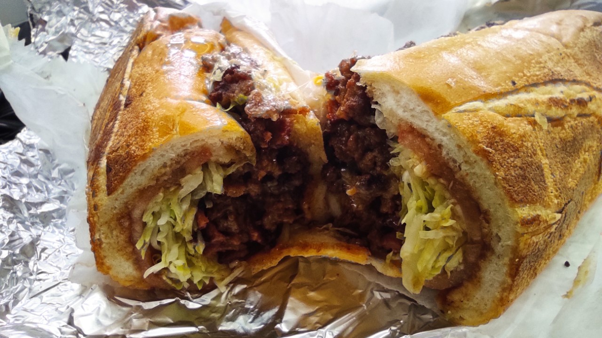

Chop Cheese

Description
Chopped cheese, also known as "a chop cheese", is a type of sandwich originating from New York City. Found in bodegas throughout the Bronx, Manhattan, Brooklyn, and Queens, it is made on a grill with ground beef, onions, and topped by melted cheese and served with lettuce, tomatoes, and condiments on a hero roll. It is compared with the cheesesteak, and a cheese sloppy joe, often thought of as a mixture of both, and is said to represent the culture of New York.
Ingredients
- Bread
- Ground Beef
- Lettuce
- Onions
- Melted cheese
- Tomatoes
- Condiments
Steps
- In a large cast iron pan or griddle at medium-high heat, melt 1-tablespoon butter, toast inside surface of buns, 3-4 minutes. Reserve buns onto clean plates.
- Add remaining butter and onion to pan, sear about 3 minutes, stirring occasionally until they begin to get transparent. Move onions to sides of the pan, add ground beef to center as one large loose burger patty, brown without breaking it up. Season raw side with salt, pepper and granulated garlic. Sear beef 3-4 minutes, flip to brown second side, 2 minutes.
- Begin to chop up ground beef with spatula while working onions into beef mixture (about 3 minutes). Once no pink remains, divide ground beef and onion mixture into 4 even portions while still in pan, add 2 slices of cheese to each portion, melt another 2 minutes.
- Spread mayonnaise on insides of buns, add beef and top with lettuce and tomato. Press together and enjoy!